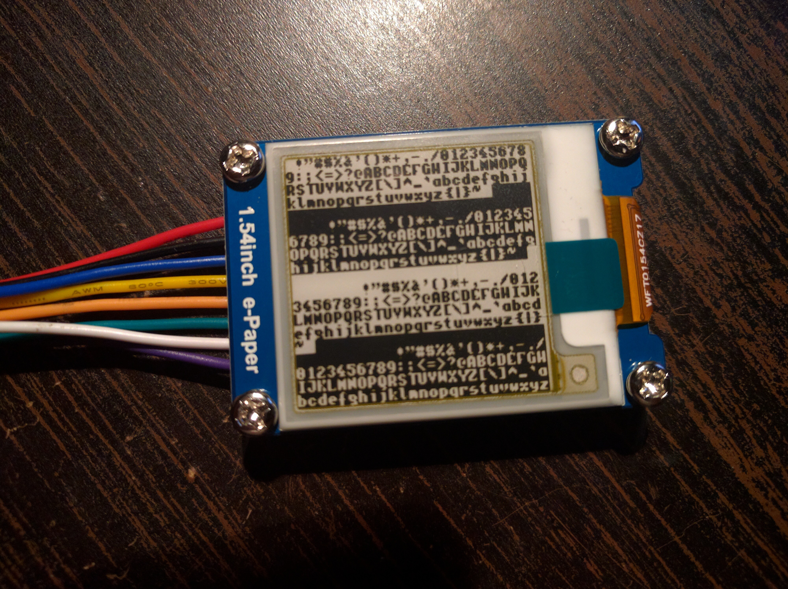

Testing Cheap E-paper Displays¶
Published on 2018-04-04 in CircuitPython Badge.
The e-paper displays that I mentioned earlier arrived today, and I was able to do some testing with one of them:
The datasheet has a very handy flow diagram, which tells us exactly what SPI commands need to be sent. Using that, I wrote a simple driver:
———- more ———-
class Display:
width = 152
height = 152
def __init__(self, spi, dc, cs, busy):
self._spi = spi
self._cs = cs
self._dc = dc
self._busy = busy
self.buffer = bytearray(152 * 19)
self.reset()
def _wait(self):
while not self._busy.value:
pass
def _command(self, command, data):
self._dc.value = 0
self._cs.value = 0
self._spi.write(command)
self._dc.value = 1
if data:
self._spi.write(data)
self._cs.value = 1
def reset(self):
self._command(b'\x06', b'\x17\x17\x17') # booster soft start
self._command(b'\x04') # power on
self._wait()
self._command(b'\x00', b'\x1f') # panel setting
self._command(b'\x61', b'\x98\x00\x98') # resolution 152x152
self._command(b'\x50', b'\x87') # VCOM and data interval
def update(self):
self._cs.value = 0
self._command(b'\x10', self.buffer) # data start 1
self._command(b'\x11') # stop data
self._command(b'\x12') # display refresh
self._cs.value = 1
self._wait()
def pixel(self, x, y, color=None):
if not 0 <= x < 152 or not 0 <= y < 152:
return
page = y // 8
mask = 1 << (y % 8)
if color is None:
return bool(self.buffer[page * 152 + x] & mask)
elif color:
self.buffer[page * 152 + x] |= mask
else:
self.buffer[page * 152 + x] &= ~mask
Now, they weren’t joking when they wrote that a full update takes 6 seconds — that is true, and during that time the display keeps blinking, so you can’t use it. I was hoping that partial updates would be faster and without the flickering, but turns out that they are not — the display goes through exactly the same procedure, blinking everything, but only updates the small window that was specified. I’m not entirely sure what this is useful for.
But not all hope is lost. I might be able to tweak the chip’s settings a little bit, to force an update without flickering — of course you can make a few small ones like that, before you have to discharge the whole thing and do a full update — but I hope to be able to at least make it smooth enough to be able to move a cursor in a menu. Without that, there isn’t really any chance for interactivity.
UPDATE: After some meditation, reading the datasheets, experimenting, and — most of all — looking at code that handles that for other displays, I have figured out what needs to be done for quick partial refreshes. Unfortunately, that will involve a bit of work. Basically, the sequence the chip goes through on update is programmed into it as a lookup table. There is, however, an option to use an externally specified lookup table instead — where I can specify a much shorter cycle. However, that involves a little bit of work in figuring out first the format of that lookup table, and then the set of values that will work for this particular display. The first is fortunately described, albeit briefly, in the datasheet. The second will require a bit of experimentation.